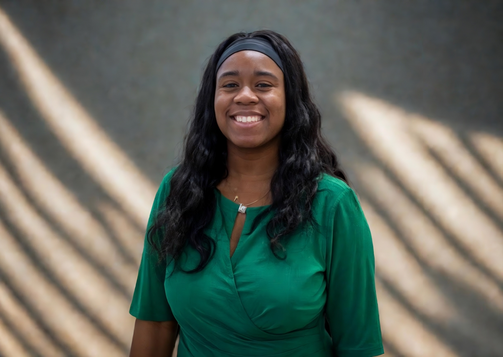

About Us
Who We Are
We are family, friends, partners, and community advocates carrying forward Cathy Lance Timmons' legacy of compassion, education, and service.
About Us
Board Leadership
Meet the directors helping carry forward Cathy Lance Timmons' legacy.

Our Leadership
Board Chair & President
Tatyana Lance, MBA, MSW, LMSW, LCSW-A
Daughter of Cathy Lance-Timmons, Tatyana holds a Master of Social Work (MSW) and a Master of Business Administration (MBA), and is a Licensed Master Social Worker (LMSW) and Licensed Clinical Social Worker Associate (LCSWA). She founded The Cathy Lance Timmons Foundation as a way to give back to the community her mother advocated for and loved so deeply, keeping her legacy alive and continuing to encourage others in positive, meaningful ways. Her hope is that the foundation will reach communities everywhere, offering support through its community impact and education initiatives.